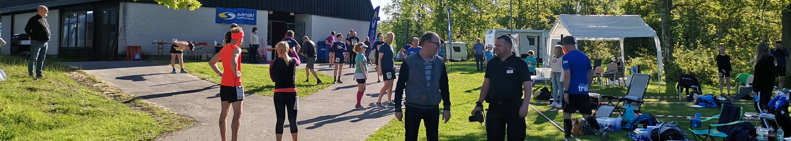
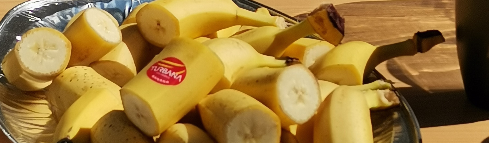

HJÄLMARGÅRDEN
BACKYARD ULTRA
2023
Information till löpare
Vad är en backyard ultra?
En Backyard Ultra är en tävlingsform där ett 6,7-kilometersvarv startar varje timme. För att starta nästa varv måste du som löpare ha gått i mål på det föregående varvet. Loppet avslutas sedan när endast en löpare återstår. Distansen som löpare ska avverka varje timme kan verka märklig men beror på att den som håller på i 24 timmar når den prestigefyllda gränsen 100 miles! Det är också då vi kommer att avsluta loppet.
Hur snabbt behöver man springa för att hinna i mål?
Att springa 6,7 km varje timme kan låta tufft. Men för referenspunkt kan sägas att den genomsnittliga gånghastigheten i Sverige är 5 km/h (sviktfas.se). 6,7 km på en timme klarar därför de flesta genom att jogga lugnt och gå i uppförsbackarna.
Blir man inte hungrig av att springa?
Hungrig blir man ju såklart! Men det bästa med en backyard är att det alltid finns saker att äta i varvning. De flesta brukar också ta med sig egen mat.

- Hur samlar vi in pengar till Ukraina?
Alla löpare har fram till startdatum möjlighet att samla in varvbidragslöften. Ett varvbidragslöfte är helt enkelt ett löfte från någon att skänka pengar för varje varv löparen klarar av. De totala varvbidragslöften som varje löpare samlat in kommer sedan att adderas på en storbildskärm vid målet så att alla hela tiden kan se hur mycket vi samlat in tillsammans!
Pengarna kommer att förmedlas via Evangeliska Frikyrkans systerorganisation den Ukrainska Baptistunionen som bedriver hjälparbete bland drabbade i Ukraina. Pengarna samlas in till Plus-girokontot: 900403-7 Svensk insamlings-kontroll.

Praktisk info
Gren: |
Löpning |
Distans: |
Tidslopp (backyard ultra) |
Starttid: |
27 maj 2023 kl 10 |
Sluttid: |
28 maj 2023 kl 10 |
Arrangör: |
Hjälmargården |
Längd och kupering: |
Banan är 3,35 km och vi springer två varv varje timme. Kuperingen är lätt och har bara enstaka backar. |
Underlag: |
20% asfalt, 60% grus, 10% terräng, 10% ospecificerat |
Plats: |
Läppe, Vingåker, Södermanland |
Logi: |
Kyrka invid tävlingsstart med gott om plats att vistas mellan varven. Hjälmargården erbjuder också billig camping till alla deltagare. Mer info på hjalmargarden.se |
Hur görs anmälan?
Anmälan görs via jogg.se. Länk finns nedan. Anmälan ska innehålla förnamn, efternamn, mobilnummer,
och mailadress. Anmälan kostar 400 kr och i priset ingår
sportdryck kaffe, mindre tilltugg varje
varv samt lunchpaket.
Skicka in din anmälan senast den 20
maj. Efteranmälan kan göras i mån
av plats.
För mer info maila:
hjalmargardenbackyard@gmail.com
Varmt välkommen den 27 maj!